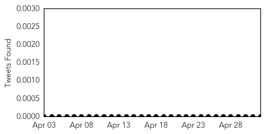
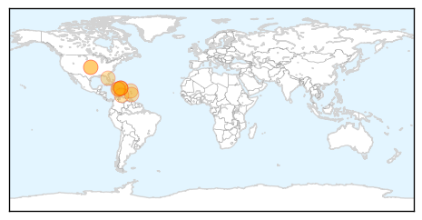

30 Day Trends
Web: 8 alerts, 0 warnings
Twitter: 0 alerts, 0 warnings
Top Articles:
- 1.000
- Virus Outbreak In Caribbean Has 31,000 Suspected Cases So Far; US Preparing For Introduction
- 0.999
- Newly arrived virus quickly spreading in Caribbean
- 0.999
- Virus from Asia, Africa gains foothold in Caribbean
- 0.999
- Recently Arrived Chikungunya Virus Gains Foothold In Caribbean
- 0.999
- Newly Arrived Virus Gains Foothold in Caribbean
- 0.999
- Vicious virus spreading quickly in Caribbean
- 0.997
- Chikungunya: More cases reported in St. Vincent, Haiti records first cases
- 0.993
- JamaicaObserver.com
- 0.990
- 7NEWS Miami Ft. Lauderdale News, Weather, Deco
- 0.986
- More cases of chikungunya confirmed in St Vincent
- 0.980
- Newly Arrived Virus Spreads in Dominican Republic — Naharnet
Top Tweets:
-
No tweets found for May 02, 2014
Web/News Articles

Tweets
Article Locations
Article Confidences